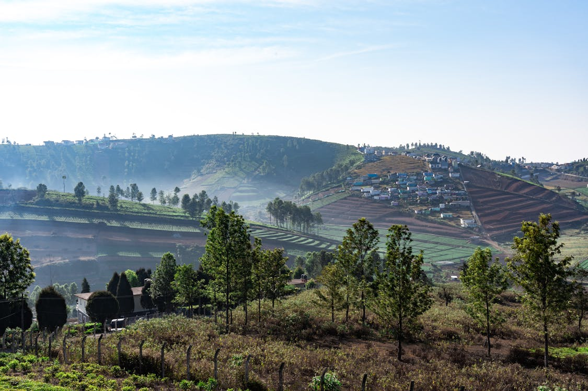
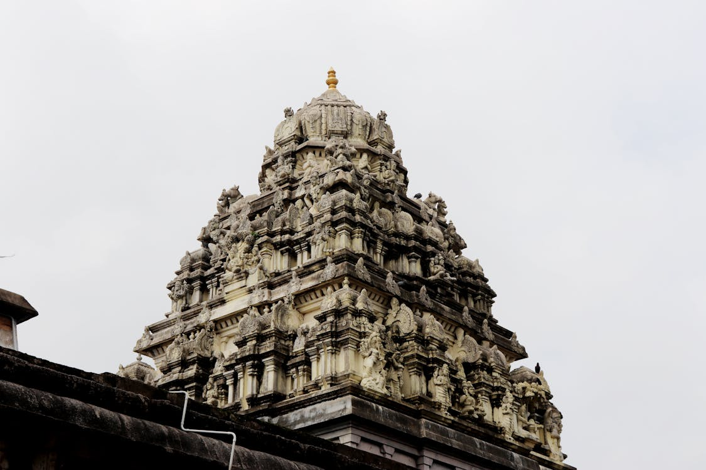
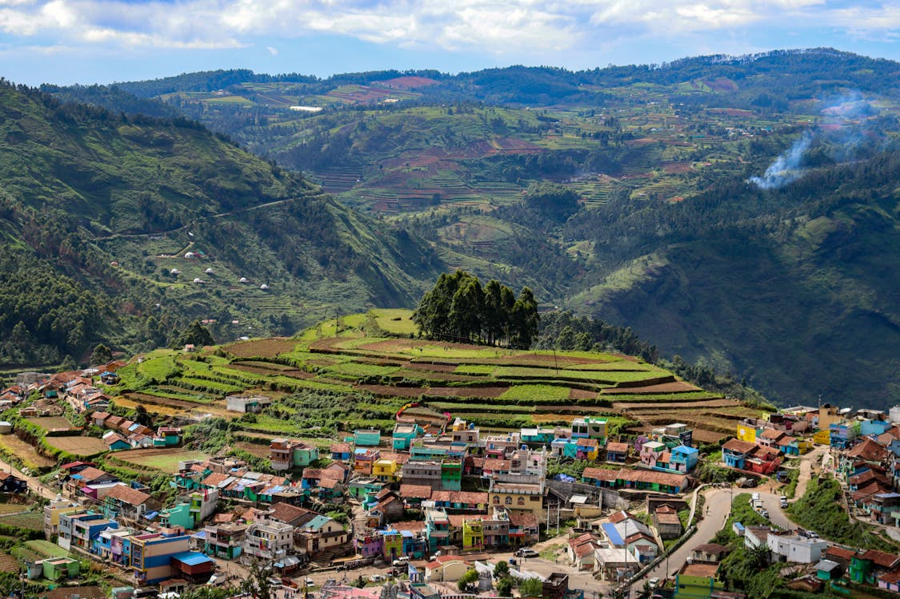

-
Kanchipuram - Known as the City of Thousand Temples and renowned for its silk sarees.
Madurai - Famous for the Meenakshi Amman Temple and its rich cultural heritage.
Ooty - A charming hill station known as the Queen of Hill Stations, celebrated for its tea gardens and Nilgiri Mountain Railway.
Mahabalipuram - A UNESCO World Heritage site, famous for its rock-cut temples, shore temple, and ancient sculptures.
Chennai - The capital city, known for Marina Beach, ancient temples, and its vibrant cultural scene.
Rameswaram - A sacred pilgrimage town known for the Ramanathaswamy Temple and its proximity to Dhanushkodi.
Coimbatore - A bustling city known as the Manchester of South India, offering beautiful temples and Western Ghats scenery.
Thanjavur - Renowned for the Brihadeeswarar Temple, a UNESCO World Heritage site, and its classical art forms.
Yercaud - A tranquil hill station in the Eastern Ghats, famous for its coffee plantations and serene atmosphere.
Kodaikanal - A serene hill station known for its misty hills, Coaker's Walk, and the star-shaped Kodaikanal Lake.
Explore Pondicherry
Pondicherry - A former French colony known for its colonial architecture, beaches, and Auroville community.